| [ Team LiB ] |
|
2.3 Material BalancesThe simplest modeling problems consist of material balances. In this section we use two process examples to illustrate the modeling techniques used. Recall that a model for a liquid surge vessel was developed in Chapter 1 (Example 1.3). Example 2.1: Gas Surge DrumSurge drums are often used as intermediate storage capacity for gas streams that are transferred between chemical process units. Consider a drum depicted below (Figure 2-2), where qi is the inlet molar flow rate and q is the outlet molar flow rate. A typical control problem would be to manipulate one flow rate (either in or out) to maintain a desired drum pressure. Here we develop a model that describes how the drum pressure varies with the inlet and outlet flow rates. Figure 2-2. Gas surge drum.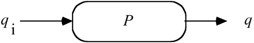 Let V = volume of the drum and n = the total amount of gas (moles) contained in the drum. Assumption: The pressure-volume relationship is characterized by the ideal gas law, PV = nRT, where P is pressure, T is temperature (absolute scale), and R is the ideal gas constant. The rate of accumulation of the mass of gas in the drum is described by the material balance 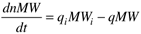 where MW represents the molecular weight. Assuming that the molecular weight is constant, we can write 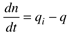 From the ideal gas law, since V, R, and T are assumed constant, 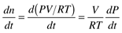 so 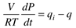 which can be rewritten 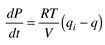 To solve this equation for the state variable P, we must know the inputs qi and q, the parameters R, T, and V, and the initial condition P(0). Once again, although q is the molar rate out of the drum, we consider it to be an input in terms of solving the model. It should be noted that just like the liquid level process discussed in Example 1.3, this is an integrating system. For example, if the inlet molar flow rate increases while the outlet flow rate stays constant, then the pressure increases without bound. In reality, an increase in pressure would most likely cause an increase in outlet molar flow rate (owing to the increased driving force for flow out of the drum). Indeed, we model that case now. Outlet Flow as a Function of Gas Drum PressureConsider the case where the outlet molar flow rate is proportional to the difference in gas drum pressure and the pressure in the downstream header piping, Ph. Let b represent a flow coefficient. If the flow/pressure difference relationship is linear, then 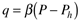 So the dynamic modeling equation is 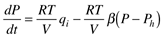 At steady state, dP/dt = 0, so we find the steady-state relationship 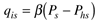 where we use the subscript s to indicate a steady-state solution. Solving explicitly for Ps, we find 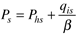 which is a linear relationship. An increase in qis will lead to an increased value of Ps. This type of system is known as self-regulating, since a change in an input variable eventually leads to a new steady-state value of the output variable. Contrast self-regulating systems with integrating systems that do not achieve a new steady state (the output "integrates" until a vessel overflows or a tank overpressures). The modeling equations for Examples 1.3 and 2.1 were based on writing an overall material balance. In the case of a liquid vessel we found that either liquid volume or height could serve as an appropriate state variable. For the gas drum we found that pressure was the most appropriate state variable. Liquid level and gas pressure vessels represent inventory problems, which are integrating by nature. If there is an imbalance in the inlet and outlet flow rates, the inventory material (liquid or gas) can easily increase or decrease beyond desirable limits. It is the independence of the flow rates that can cause this problem. Notice, however, that a feedback controller can be designed to regulate the inventory levels (liquid volume or gas pressure). A feedback controller manipulates a stream flow rate to maintain a desired inventory level. There are many control loops that a process engineer must consider at the design stage of a process. Because of the critical nature of inventory loops, these must receive the highest level of consideration. In Chapter 15, we find that inventory loops must be closed before other loops are considered. The next example illustrates the use of modeling for reactor design. Example 2.2: An Isothermal Chemical ReactorEthylene oxide (A) is reacted with water (B) in a continuously stirred tank reactor (CSTR) to form ethylene glycol (P). Assume that the CSTR is maintained at a constant temperature and that the water is in large excess. The stoichiometric equation is 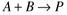 Here we develop a model (Figure 2-3) to find the concentration of each species as a function of time. Figure 2-3. Isothermal stirred tank reactor.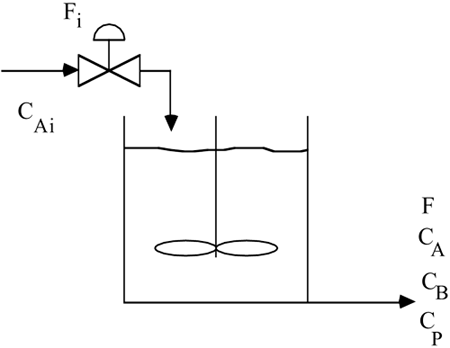 Overall Material BalanceThe overall mass balance (since the tank is perfectly mixed) is 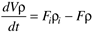 Assumption: The liquid-phase density, r, is not a function of concentration. The vessel liquid (and outlet) density is then equal to the inlet stream density, so 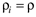 and we can write Equation (2.18) as (notice this is the same result as Example 1.3) 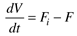 Component Material BalancesIt is convenient to work in molar units when writing component balances, particularly if chemical reactions are involved. Let CA and CP represent the molar concentrations of A and P (moles/volume). The component material balance equations are 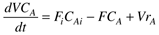 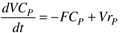 where rA and rP represent the rate of generation of species A and P per unit volume, and CAi represents the inlet concentration of species A. Since the water is in large excess its concentration does not change significantly, and the reaction rate is first order with respect to the concentration of ethylene oxide, 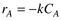 where k is the reaction rate constant and the minus sign indicates that A is consumed in the reaction. Each mole of A reacts with a mole of B (from the stoichiometric equation) and produces one mole of P, so the rate of generation of P (per unit volume) is 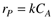 Expanding the left-hand side of Equation (2.20a), 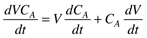 Combining Equations (2.19), (2.20a), and (2.23), we find 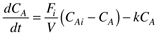 Similarly, the concentration P can be written as 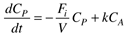 This model consists of three differential equations (2.19, 2.24, 2.25) and, therefore, three state variables (V, CA, and CP). To solve these equations we must specify the initial conditions [V(0), CA(0), and CP(0)], the inputs (Fi, F, CAi) as a function of time, and the parameter (k). The state, input, and parameter vectors are 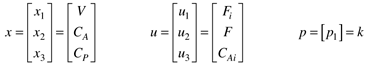 Using state-variable notation, the model has the form 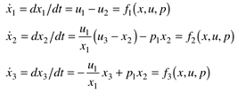 or, 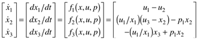 Simplifying AssumptionsThe reactor model presented in Example 2.2 has three differential equations. Often other simplifying assumptions are made to reduce the number of differential equations to make them easier to analyze and faster to solve. Assuming a constant volume (dV/dt = 0), perhaps owing to a feedback controller, reduces the number of equations by one. The resulting differential equations (since we assumed dV/dt = 0, F = Fi) are 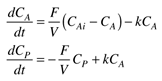 Steady-State SolutionAt steady state, we find the following relationships (where the subscript s represents a steady-state solution): 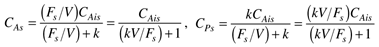 Notice that the concentrations are a function of the space velocity (Fs/V), which has units of inverse time. The space velocity can be thought of as the number of reactor volumes that "change over" per unit time. It is inversely related to the fluid residence time (V/Fs), which has units of time and can be thought of as the average time that an element of fluid spends in the reactor. The concept of conversion is important in chemical-reaction engineering. The conversion of reactant A is defined as the fraction of the feed-stream component that is reacted. 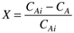 So, from Equations (2.30) and (2.31), we find that the conversion is related to the space velocity, 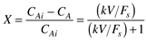 Notice that the conversion is a function of the dimensionless term kV/Fs, which is known as the Damkohler number. The Damkohler number is the ratio of the characteristic residence time to the characteristic reaction time and is widely used by chemical-reaction engineers to understand reactor behavior. Two different chemical-reaction systems can have the same conversion if their Damkohler numbers are the same. A system with a large rate constant and low residence time can have the same conversion as a system with a small rate constant and high residence time. Numerical Example Using an Experimentally Determined Rate ConstantLaboratory chemists have determined that the reaction rate constant at 55°C is k = 0.311 min-1. Here we find the steady-state concentrations of ethylene oxide (A) and ethylene glycol (P) as a function of the steady-state space velocity and residence time. The plots in Figure 2-4 all illustrate the same basic concept. On the left-hand plots, the independent variable is the space velocity, while the right-hand plots have residence time as the independent variable. The top plots have concentrations as the dependent variables, while the bottom plots have conversion as the dependent variable. At low space velocities (large residence times) there is nearly complete conversion of ethylene oxide to ethylene glycol, while at high space velocities (low residence times) there is little conversion. Figure 2-4. Steady-state relationships for ethylene glycol reactor.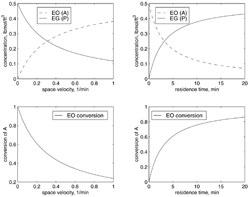 Design ObjectiveIt is desired to produce 100 million pounds per year of ethylene glycol. The feed-stream concentration is 0.5 lbmol/ft3 and an 80% conversion of ethylene oxide has been determined to be reasonable. What volume of reactor should be specified to meet the production rate requirement? Since process plants often have a shutdown period every 18 months or so, assume 350 days/year of operation. The design flow-rate calculation is shown below. Since 80% of the ethylene oxide is converted to ethylene glycol, the ethylene glycol concentration is 0.4 lbmol/ft3 [see Equation (2.32)]. Since the molecular weight is 62 lb/lbmol, the mass concentration is 24.8 lb/ft3. The operating flow rate is 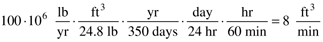 Solving Equation (2.32) for reactor volume, we find that the required volume is 102.9 ft3 or 769 gallons. It should be noted that reactors of this size range can be purchased in standard sizes. Most likely the engineer would have a choice of 750-gallon or 1000-gallon models and would choose the 1000-gallon model for expansion capability. Larger scale reactors (greater than roughly 10,000–20,000 gallons) are usually special orders involving on-site construction (or off-site with rail or truck delivery). For the remainder of this problem we assume that the reactor is operated with a volume of 769 gallons, regardless of its maximum capacity. Dynamic ResponseAssume that a control strategy will be specified to maintain the desired ethylene glycol concentration in the reactor by manipulating the reactor feed flow rate. In order to design the controller, it is important to understand the dynamic response between an input change and the observed output(s). A step change of 5% in the space velocity (F/V) yields the responses in the ethylene oxide and ethylene glycol concentrations shown in Figure 2-5. An increase in the space velocity (corresponding to a decrease in residence time) results in a decrease in the conversion of A to P. We also see that it takes roughly 10 minutes for the reactor concentrations to achieve new steady-state values. These simulations were performed by integrating differential Equations (2.29) using the techniques presented in Section 2.6. Figure 2-5. Response of ethylene oxide and ethylene glycol concentrations to a step change in space velocity of 5% (from F/V = 0.0778–0.0817 min-1).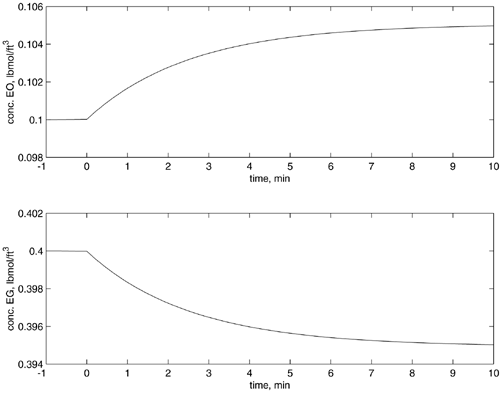 Examples 2.1 and 2.2 illustrate the use of material balances to develop models. In the gas drum example, the state variable of interest was the drum pressure. In the isothermal ethylene glycol reactor, the state variables of interest were the concentrations of ethylene oxide and ethylene glycol. Material balance equations are rarely adequate to develop most models of interest. In Section 2.5, we review the development of energy balance models, where temperature is often a state variable. First, however, we cover the basic idea of constitutive relationships in Section 2.4. |
| [ Team LiB ] |
|